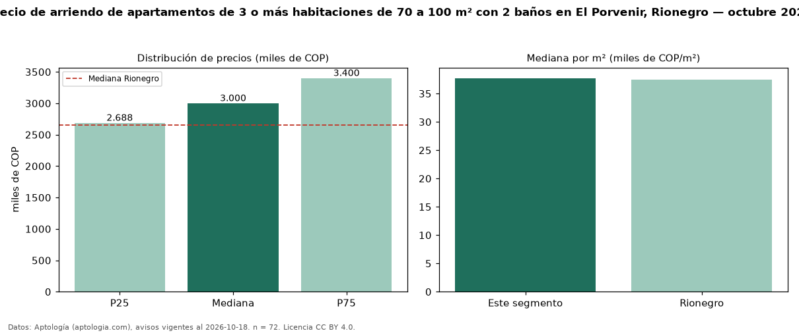

Precio de arriendo de apartamentos de 3 o más habitaciones de 70 a 100 m² con 2 baños en El Porvenir, Rionegro — octubre 2026
Con 72 avisos vigentes, el canon mediano de apartamentos de 3 o más habitaciones de 70 a 100 m² con 2 baños en arriendo en El Porvenir, Rionegro es COP 3,00 millones al mes. Eso es 6 % menos que la mediana de los apartamentos de 3 o más habitaciones de 70 a 100 m² en arriendo de El Porvenir (COP 3,20 millones, n = 102); este segmento reúne el 71 % de esos avisos. Por metro cuadrado, la mediana es COP 37.720/m² al mes (n = 72), 2 % por debajo de los apartamentos de 3 o más habitaciones de 70 a 100 m² en arriendo de El Porvenir (COP 38.606/m²). El área mediana anunciada es 78 m². El estrato más frecuente es 5 (62 % de los avisos con estrato). La mediana de todos los apartamentos en arriendo de Rionegro es COP 2,65 millones (+13 % de diferencia). La mitad central de los avisos va de COP 2,69 millones a COP 3,40 millones (razón 1,3), una dispersión baja. Datos: Aptología (aptologia.com), CC BY 4.0 — https://www.aptologia.com/arriendo/rionegro/el-porvenir. Archivos: PDF, CSV con las cifras y gráfica PNG.

| Avisos únicos | 72 |
|---|---|
| Percentil 25 | COP 2.687.500 |
| Mediana | COP 3.000.000 |
| Percentil 75 | COP 3.400.000 |
| Mediana por m² | COP 37.720 |
Fuente: avisos vigentes de portales inmobiliarios recopilados por Aptología, deduplicados (mínimo 30 avisos únicos por celda). Precios pedidos, no cerrados. Fecha: 2026-10-18.